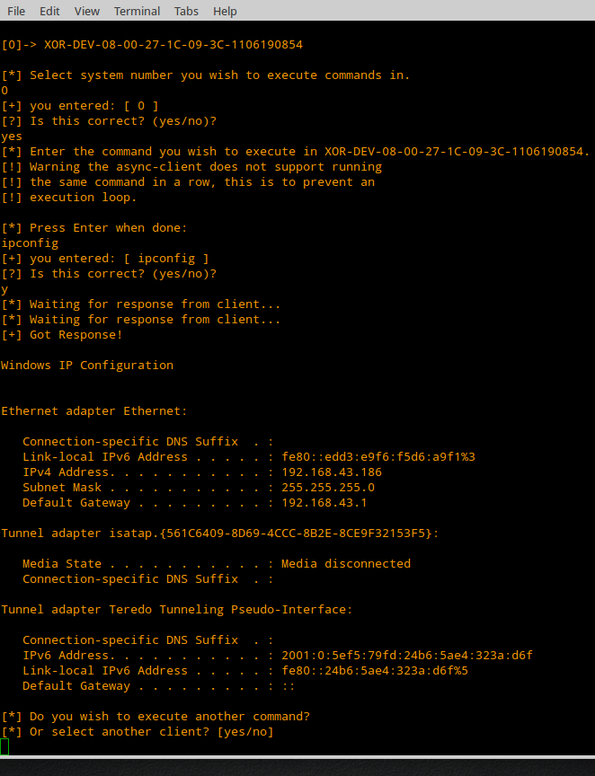

|| Asynchronous Shell-Handler, author: xor-function || 09/27/2015 || Back to main
After looking into different implementations of reverse shell communication and multi-handlers. I noticed a lot of them used direct/raw tcp sockets to communicate and the only difference was the port they communicated on. Also some of the ones that seemed to use http protocol requests wrapped in SSL/TLS belonged to proprietary platforms. So I got interested in creating a shell-handler that could also work over the HTTP/S protocol to control clients. Also since it's working over the http protocol why not use a web server to host a web application that's performing these functions. So I made a Perl cgi program and decided to host it on a Lighttpd web server configured with a self-signed certificate. But for this to work there needs to be client software that would work with this custom handler. This led to the async-client.ps1 powershell script. I severely mutilated the Invoke-PowerShellTcp script written by Nikhil "SamratAshok". The direct tcp socket communication was scraped and had the client pull commands/push results via webclient download string. On the server only file read/write commands are issued, command execution only occurs client side. To improve chances of compatibility between different PowerShell versions the http requests are passed by an constructed url used in a download string. The data posted is encoded with base64 that's modified to be url safe. To install grab a copy from github Update: this repo along with gen-obfuscated are now part of fathomless. https://github.com/xor-function/fathomless It was made for a vanilla Ubuntu 14.04 LTS server system. To set everything up just run the installer. ./install.sh Once everything is set up some randomized file names and a password are generated and printed out to a summary. UPDATE: Added new output summary which now includes the certificate fingerprints required by the client. A basic interactive command shell is provided via cli.pl  If you want to run commands manually, use echo and tail. For more details look at the README.md file Additional to get this PowerShell async-client.ps1 code executed on a system look into gen-obfuscated and make sure if to accommodate self-signed certs one your one-liner, this isexplained in "Using self-signed certificates with Powershell".